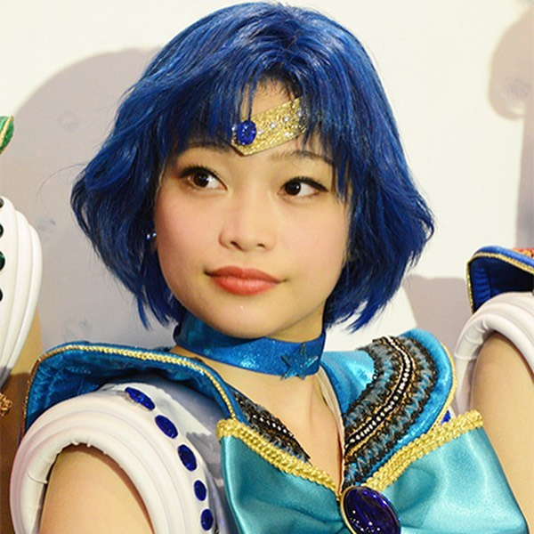
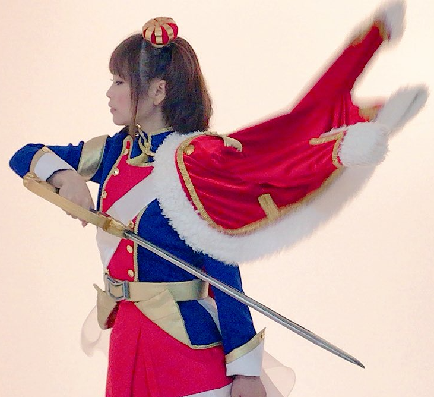

Momoyo Team
papeles más conocidos

Ami Mizuno
Sailor Senshi
Ami es una chica tímida, introvertida y tranquila a la que le cuesta hacer amigos y es muy bella e inteligente.



Aijo Karen
Butai Shojo
Decidió convertirse en una Butai Shojo después de ser cautivada por una actuación de "Starlight" que vio cuando era niña.
Morino Seria
Geki Doll
Después de ver a Izumi en el escenario del Super Material Theater, comenzó a anhelar pararse en el escenario y actuar.
Imágenes de Momoyo